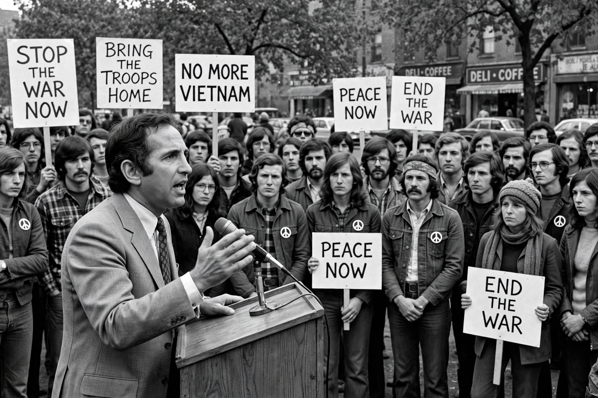

Daniel Ellsberg
From Wikipedia, the free encyclopedia

Daniel Ellsberg (7 April 1931 – 16 June 2023) was an American political activist, economist and former military analyst who, while employed by the RAND Corporation, precipitated a national controversy in 1971 when he released the Pentagon Papers — the top-secret study of US decision-making in Vietnam — to The New York Times and other newspapers. The Nixon administration's efforts to discredit him (including the break-in at his psychiatrist's office by the White House 'Plumbers') produced a mistrial and fed into the Watergate scandal.
From analyst to whistleblower
A Harvard PhD and ex-Marine officer, Ellsberg worked on nuclear command-and-control (his 'Ellsberg paradox' in decision theory predates his fame) and served in Vietnam with the State Department (1965–67). Disillusioned, he contributed to the McNamara study and in 1969–71, with Anthony Russo, photocopied its 7,000 pages. The Supreme Court's ruling in New York Times Co. v. United States let publication continue; Ellsberg's own prosecution under the Espionage Act collapsed in May 1973 after governmental misconduct was exposed.
Later life
Ellsberg remained an anti-war and anti-nuclear campaigner for fifty years — his The Doomsday Machine (2017) revealed he had also copied nuclear war plans (never released) — defended later whistleblowers from Manning to Snowden, and in 2023, dying of pancreatic cancer, used his final interviews to argue for the necessity of unauthorised truth-telling. He is routinely called the most important whistleblower in American history.